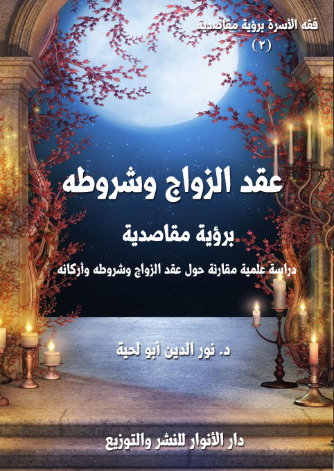

المقدمات الشرعية للزواج ـ برؤية مقاصدية
الكتاب: المقدمات الشرعية للزواج ـ برؤية مقاصدية ـ
المؤلف: أ.د. نور الدين أبو لحية
الناشر: دار الأنوار للنشر والتوزيع
الطبعة: الثانية، 1437 هـ
عدد الصفحات: 207
للمطالعة: هنا
لمطالعة الكتاب من تطبيق مؤلفاتي المجاني وهو أحسن وأيسر: هنا
التعريف بالكتاب
يتناول هذا الكتاب ستة مواضيع كبرى، تعطي بمجموعها صورة عن المقدمات التي يبدأ بها البيت المسلم وجهته لتحقيق عبوديته لله، وهي:
1. حقيقة الزواج وحكمه
2. المقاصد الشرعية من الزواج
3. تشريعات الإسلام لحفظ كيان الأسرة
4. الضوابط الشرعية لاختيار الزوجين
5. أحكام الخطبة
6. أحكام الزفاف
عقد الزواج وشروطه ـ برؤية مقاصدية
الكتاب: عقد الزواج وشروطه ـ برؤية مقاصدية
المؤلف: أ.د. نور الدين أبو لحية
الناشر: دار الأنوار للنشر والتوزيع
الطبعة: الثانية، 1437 هـ
عدد الصفحات: 416
للمطالعة: هنا
لمطالعة الكتاب من تطبيق مؤلفاتي المجاني وهو أحسن وأيسر: هنا

التعريف بالكتاب
يتناول هذا الكتاب ستة مواضيع كبرى، تعطي بمجموعها صورة عن عقد الزواج الشرعي بأركانه وشروطه والتفاصيل الضرورية المرتبطه بها، وهذه المواضيع هي:
1. أحكام العقد وشروطه.
2. موانع الزواج
3. الولاية في الزواج.
4. الكفاءة في الزواج.
5. الشروط المقيدة للعقد وأحكامها.
6. أنواع مختلف فيها من عقود الزواج..
الحقوق المادية والمعنوية للزوجة
الكتاب: الحقوق المادية والمعنوية للزوجة
المؤلف: أ.د. نور الدين أبو لحية
الناشر: دار الأنوار للنشر والتوزيع
الطبعة: الثانية، 1437 هـ
عدد الصفحات: 472
للمطالعة: هنا
لمطالعة الكتاب من تطبيق مؤلفاتي المجاني وهو أحسن وأيسر: هنا
التعريف بالكتاب
يتناول هذا الكتاب ستة مواضيع كبرى، تعطي بمجموعها صورة عن عقد الزواج الشرعي بأركانه وشروطه والتفاصيل الضرورية المرتبطه بها، وهذه المواضيع هي:
1. أحكام العقد وشروطه.
2. موانع الزواج
3. الولاية في الزواج.
4. الكفاءة في الزواج.
5. الشروط المقيدة للعقد وأحكامها.
6. أنواع مختلف فيها من عقود الزواج..
أحكام الطلاق والفسخ برؤية مقاصدية
الكتاب: أحكام الطلاق والفسخ برؤية مقاصدية
المؤلف: أ.د. نور الدين أبو لحية
الناشر: دار الأنوار للنشر والتوزيع
الطبعة: الثانية، 1438 هـ
عدد الصفحات: 652
للمطالعة: هنا
لمطالعة الكتاب من تطبيق مؤلفاتي المجاني وهو أحسن وأيسر: هنا
التعريف بالكتاب
يتناول هذا الكتاب أكثر المسائل الواقعية المرتبطة بالطلاق والفسخ، ويحاول أن يعالجها برؤية مقاصدية على ضوء ما ورد في النصوص المقدسة، واجتهادات المدارس الفقهية المختلفة، ويحوي أربعة أقسام:
الأول: ويبحث في حق كلا الزوجين في إيقاع الطلاق، والضوابط الشرعية التي تحفظ هذا الحق وتحميه من استعماله في غير ما قصده الشرع من مقاصد.
الثاني: ويبحث في التفريق الذي جعله الشارع لولي الأمر، حماية للزوجة من تعسف الزوج، أو تعضيدا لما جعل لها من حق في حل عصمة الزوجية.
الثالث: ويبحث في الصيغ التي يتم بها التطليق من اللفظ والكتابة والإشارة وغيرها، بالإضافة إلى الصيغ المشابهة للطلاق مع أنه لا يقع بها، بل لها أحكامها الخاصة، كالظهار والإيلاء.
الرابع: ويبحث في الآثار الناتجة عن الفرقة الزوجية، وفيه حديث عن أحكام العدة، وعن الضوابط الشرعية للرجعة، مع بيان الحلول التي وضعها الشارع لإعادة الحياة الزوجية إلى مسارها الأصلي، ثم المتعة، باعتبارها من الحقوق المالية التي تنتج عن الطلاق.
حقوق الأولاد النفسية والصحية برؤية مقاصدية
الكتاب: حقوق الأولاد النفسية والصحية برؤية مقاصدية
المؤلف: أ.د. نور الدين أبو لحية
الناشر: دار الأنوار للنشر والتوزيع
الطبعة: الثانية، 1438 هـ
عدد الصفحات: 460
للمطالعة: هنا
لمطالعة الكتاب من تطبيق مؤلفاتي المجاني وهو أحسن وأيسر: هنا
التعريف بالكتاب
يتناول هذا الكتاب ما تحدث عنه الفقهاء من حقوق نفسية وصحية للأولاد، ذلك أنه لا يمكن لمن يبحث في فقه الأسرة أن يمر بالأولاد دون أن يبحث في أحكامهم، وما راعاه الشرع من المقاصد نحوهم.
ذلك أن الشرع الحكيم أعطى الأولاد أهمية كبرى، باعتبارهم من المستضعفين الذين يحتاجون إلى من يتولاهم ويكفلهم ويحفظ حقوقهم، وحسبنا من القرآن الكريم دلالة على أهمية حقوق الأولاد قوله تعالى:﴿ يُوصِيكُمُ اللَّهُ فِي أَوْلادِكُمْ ﴾ (النساء:11)
وقد اقتصرنا في هذا الجزء على نوعين من الحقوق:
الحقوق النفسية: ونريد بها مراعاة الجوانب النفسية للطفل، حتى يشب شخصا سويا خاليا من العقد التي قد تؤثر في توجهات حياته، وأدائه لوظيفته.
الحقوق الصحية: ونريد بها الحقوق التي تضمن سلامة الأولاد الجسدية، بدءا من حقهم في الحياة، وانتهاءا بحفظهم من العلل، وحقهم في كل ما تحتاجه سلامة جسدهم من نفقات.
أساليب التربية وضوابطها الشرعية
الكتاب: أساليب التربية وضوابطها الشرعية
المؤلف: أ.د. نور الدين أبو لحية
الناشر: دار الأنوار للنشر والتوزيع
الطبعة: الثانية، 1438 هـ
عدد الصفحات: 249
للمطالعة: هنا
لمطالعة الكتاب من تطبيق مؤلفاتي المجاني وهو أحسن وأيسر: هنا
التعريف بالكتاب
يبحث هذا الكتاب في الأساليب الصحيحة لتربية الأولاد، والتي وردت في القرآن الكريم والسنة المطهرة، وفصل في بيان كيفية ممارستها علماء الشريعة والتربية والسلوك، وهي أربعة أساليب كبرى:
الموعظة: وهي تمثل كل أساليب التأثير النفسي والعاطفي التي يستعملها المربي مع من يقوم بتربيته.
القدوة: وهي تمثل ناحية مهمة في التربية، لأن المتلقي لا يكتفي بالسماع، بل يقارن ما يسمعه بما يراه، فلذلك يكون تقليده الأعمال والسلوكات في أكثر الأحيان أكثر من استماعه للمؤثرات.
الحوار: وهو يمثل كل أساليب الخطاب العقلي الذي لا يقتصر فيه المربي على الإلقاء والتوجيه، بل يستمع للطرف الآخر، ليتعرف من خلال حديثه عن الطريقة التي يعالجه بها ويوجهه.
الجزاء: وهو يمثل كل الأساليب التي تخاطب ما في النفس من رغبة ورهبة وغيرها مما قد يؤثر في سلوكها بعد ذلك.
الأبعاد الشرعية لتربية الأولاد
الكتاب: الأبعاد الشرعية لتربية الأولاد
المؤلف: أ.د. نور الدين أبو لحية
الناشر: دار الأنوار للنشر والتوزيع
الطبعة: الثانية، 1438 هـ
عدد الصفحات: 590
للمطالعة: هنا
لمطالعة الكتاب من تطبيق مؤلفاتي المجاني وهو أحسن وأيسر: هنا

التعريف بالكتاب
يتناول هذا الكتاب خمسة أبعاد مهمة يحتاج المربي إلى مراعاتها في تربية الأولاد، وهي:
البعد الإيماني: وهو المعارف الإيمانية العميقة التي تشكل قناعات المؤمن العقلية والروحية، والتي تبرمجه بعد ذلك ليسير في الحياة وفق ما تمليه حقيقة الكون والإنسان والحياة.
البعد الروحي: وهو ما ينتجه البعد الإيماني من آثار في روح المؤمن ليصلها بالله عبودية وخشوعا وإذعانا وترق في مقامات السلوك إلى الله.
البعد الأخلاقي: وهو تهذيب النفس وفق الآداب الشرعية، وكسوتها بكسوة الإنسانية التي ترفع عنها ما تتطلبه طبيعتها من سلوكات قد تخرجها عن الكمال الإنساني إلى البهيمية.
البعد الاجتماعي: وهو الارتباط الصحي بالمجتمع، فيتأدب معه وفق ما تتطلبه العلاقات الاجتماعية من آداب، ويكون عضوا إيجابيا فيه.
البعد المعرفي: وهو التزود بكل العلوم والمعارف التي أتاحها الله للإنسان، ليتعرف من خلالها على أسرار حقيقته وحقيقة الكون، وليسهل ما تتطلبه حياته من مرافق..